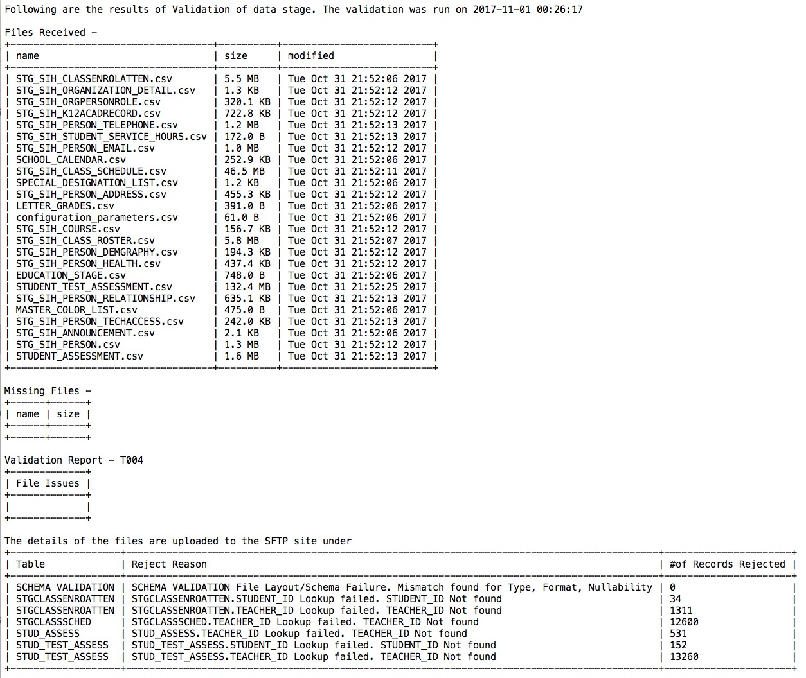

Home Page
Validation Reports
WEDI Interface
Validation Reports
This page will provide overview of Validation Reports, and go through some of most commonly observed issues
When is the validation Report Run?
Validation Reports are run on request or every night when new files are uploaded by the districts
What is in the validation Report?
A Validation Reports will communicate the following
1) Files received till date with timestamp
2) Files missing from the set of required files
3) A list of errors if any with a record count
What does the report look like?
Here is a sample of a current version of a Validation Report
